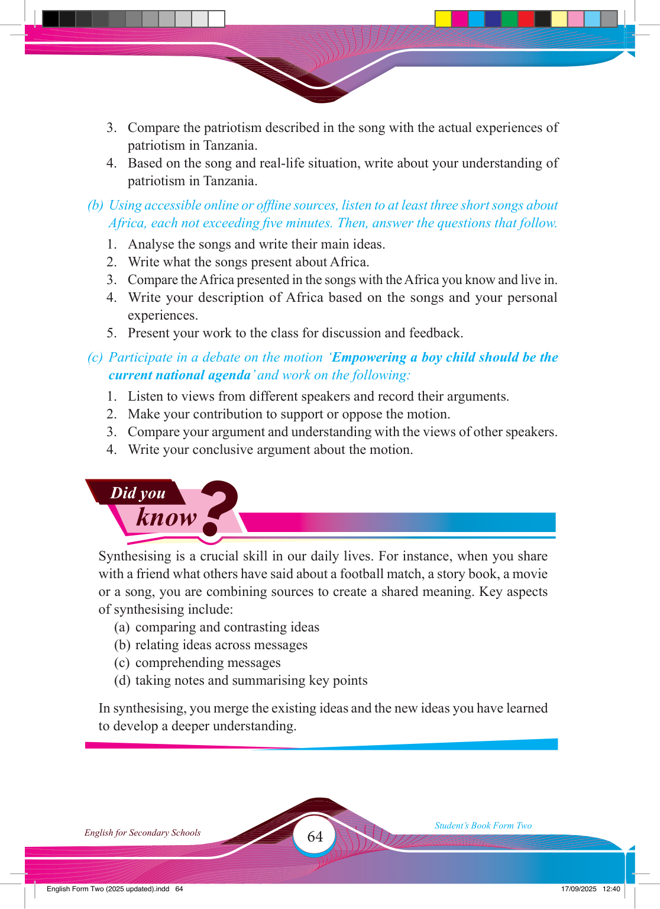

Did you
know
?
3. Compare the patriotism described in the song with the actual experiences of patriotism in Tanzania.
4. Based on the song and real-life situation, write about your understanding of patriotism in Tanzania.
(b) Using accessible online or offl ine sources, listen to at least three short songs about
Africa, each not exceeding fi ve minutes. Then, answer the questions that follow.
1. Analyse the songs and write their main ideas.
2. Write what the songs present about Africa.
3. Compare the Africa presented in the songs with the Africa you know and live in.
4. Write your description of Africa based on the songs and your personal experiences.
5. Present your work to the class for discussion and feedback.
(c) Participate in a debate on the motion ‘Empowering a boy child should be the current national agenda’ and work on the following:
1. Listen to views from different speakers and record their arguments.
2. Make your contribution to support or oppose the motion.
3. Compare your argument and understanding with the views of other speakers.
4. Write your conclusive argument about the motion.
Synthesising is a crucial skill in our daily lives. For instance, when you share with a friend what others have said about a football match, a story book, a movie or a song, you are combining sources to create a shared meaning. Key aspects of synthesising include:
(a) comparing and contrasting ideas
(b) relating ideas across messages
(c) comprehending messages
(d) taking notes and summarising key points
In synthesising, you merge the existing ideas and the new ideas you have learned to develop a deeper understanding.
17/09/2025 12:40